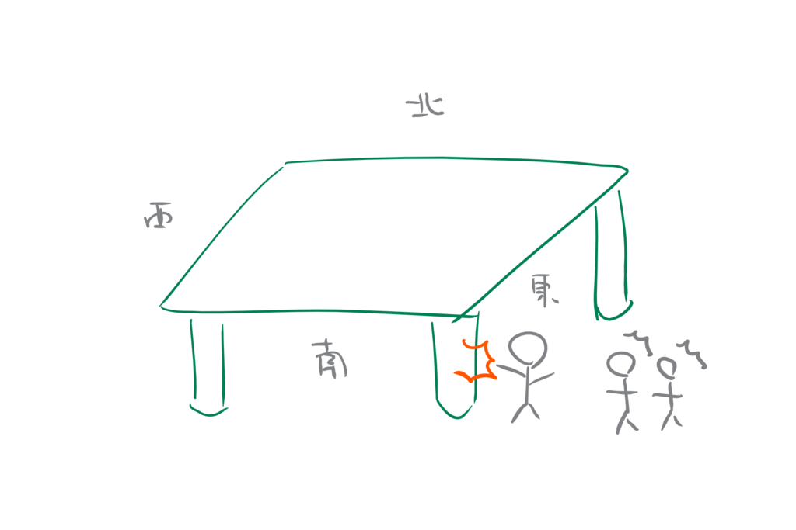
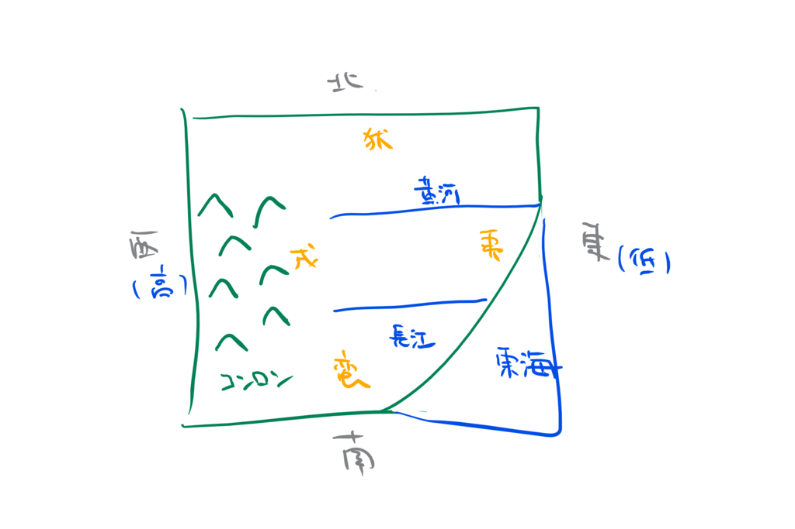
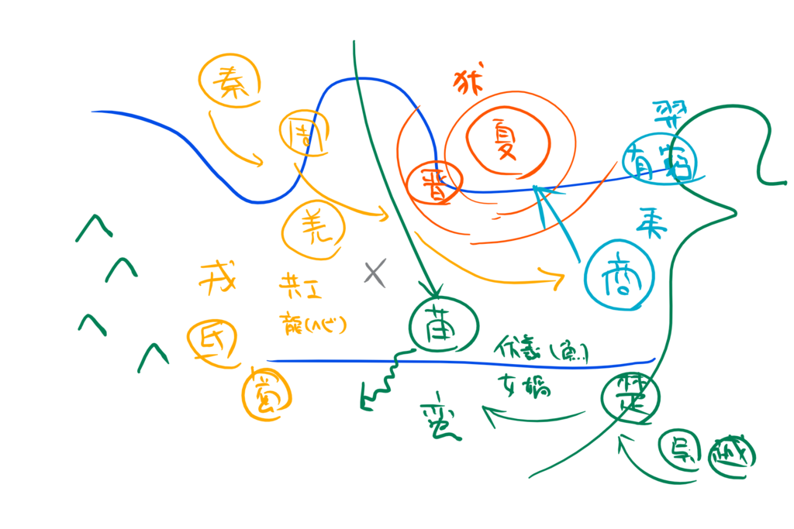

『中国の神話』
公開日：
")
- 作者: 白川静
- 出版社/メーカー: 中央公論新社
- 発売日: 2003/01/25
- メディア: 文庫
- クリック: 10回
- この商品を含むブログ (20件) を見る
もっと早く読んでればよかったなぁ、と思った。春秋戦国時代あたりまでの歴史に触れるときは、神話の世界もちゃんと押さえておくべきだね。理解が格段に違うと思った。
この本は中国の神話にあるエピソードを紹介する本ではない。エピソードの成り立ちや関係を分析して、その本来の姿、ひいては古代中国の諸民族の関係を考古学的な成果も交えながら炙り出していこうという本だ。そして、なぜ中国の神話は“消えた”のかが解き明かされる。
まぁ、そういう話は実際に読めばわかると思うので、自分は脳みそを整理する作業に集中しようと思う。

中国の歴史というのは割とリクツっぽい*1。世界は方形になっていて、それを柱が支えている。まぁ、テーブルみたいになってると想像していいかもしれない。しかしある日、この柱の一本（不周山）を共工という神さまがファッキューアタックをかましてへし折ってしまう。祝融という神さまに負けた腹いせらしい。

おかげで、中国大陸は東に傾き、東海と崑崙の山ができた（たぶん）。中国の主要な川が東流するのも、これが原因だという。
まぁ、そんな話はどうでもよくて。実はこの共工という神さま、いろんな時代にあらわれてことごとく負けてるんだよね。
- 祝融とケンカをして負ける。中国テーブルを支える脚に頭突きをかましてへし折る
- 最初は“帝”として天下を収めていたが、政治に失敗して伏羲と女媧という神さまに追い出される（『国語』）
- 五帝の顓頊と帝の地位を争い敗れる。またテーブルの脚に頭突きを食らわせる（『楚辞』天問）
- 堯の時代、幽州で処刑される
- 舜の時代に洪水を起こして、幽州へ追放される（『淮南子』）
- 禹（夏王朝の始祖）の時代にもやらかす
なんでこう時系列もなにもない、わけのわからないことになってしまっているのか。
氏によると、共工は羌族の神さまなのだという。羌族は西戎に属し、牧畜を生業とするおとなしい人たちだった。そのせいか殷（商）王朝によくつかまって生贄にされていたらしい。当時の甲骨文には「羌百を改せんか」などのテキストがよく見られるが、これは神さまに「生贄は羌族百人でええやろか？」ということ。殷の紂王は祭祀にとくに熱心な帝王だったらしいが、熱心すぎて羌族の怒りを買い、周による武力革命を招いた。有名な太公望は羌族で重要なポジションにあった人らしくて、それが周に手を貸したのが決定的になったらしい。
でも、羌族がわりと“負けっぱなし”であることは神話にも反映されている*2。最初に喧嘩をした祝融はよく知らんけど*3、その次の、伏羲・女媧は南の方に住んでいた*4苗族の神さまだったらしい。禹は夏王朝の始祖で北狄、そのあとの殷王朝は東夷の特徴をよく残しているという。
つまり、時系列に並べられている神話は、もともと同時代（それもえらく長く続いた同時代）に行われた諸民族の抗争を無理やり順序立てたものらしい。民族の移動もあるから*5、もう何が何だかわからんことになってる。共工が西戎・羌の神なのに幽州に追い払われるのも、そういう混乱を反映しているのかも*6。また、王朝が失われても民族は失われず、狄などは文公・重耳の時代に晋と結びついて強大になるケースも見られる。有窮などは孤立してほろんだ部族みたいで、羿の神話はちゅうぶらりんになってたりするのも面白い*7。

春秋時代の姓（『潛夫論』などから適当）
- 神農氏（姜族？）
- 姜：斉、申、呂、許、紀、申
- 伏羲氏（苗族？）
- 風：任、宿、須朐、顓臾
- 祝融氏
- 羋：楚、夔、越
- 妘：鄢、會、路、偪陽
- 曹：邾
- 董：
- 夏王朝
- 媯：陳
- 姒：夏、杞、鄫、譚
- 殷王朝
- 子：宋
- 軒轅氏（周王朝）
- 姫：周、魯、衛
- 皋陶
- 羸：秦、趙
日本の場合は、ヤマト王権が統一した時点で神話の統合が図られたけど、中国の場合は周王朝がわりとリクツ（≒礼楽）で治めるタイプだった（孔子がさけた“怪力乱神”っていうのは諸民族のまだ観念化されていない生身の祭神なのかもね）のと、協力氏族を各地に封じて連合する政体であったこと*8、西戎の攻撃を受けて実質的な王権を喪失したことなどから、十分な統合が果たされなかった。神話と文化が切り離され、（諸子百家なんかによって）経典として整理されて書き残された「死んだ神話」になってしまったのはそういうことみたいだね。
西の秦がメソポタミア・ペルシアとつながっていて、占星術（→陰陽五行説などに影響）などの先進文化を吸収していたんじゃないかという話とかも割と面白かった。